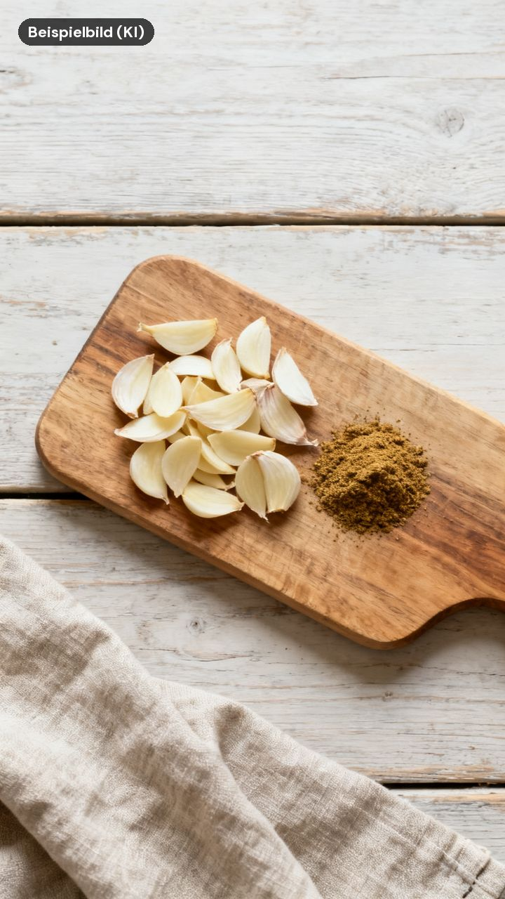
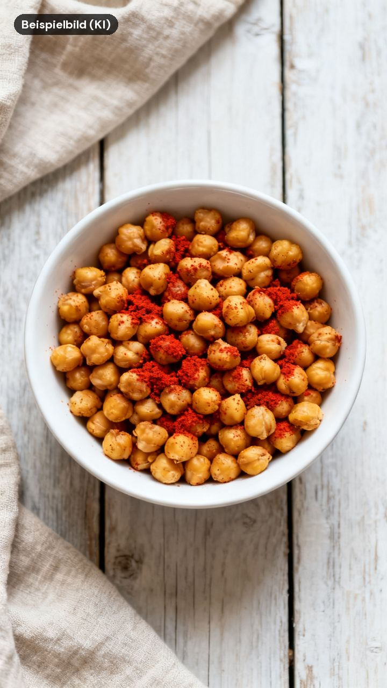
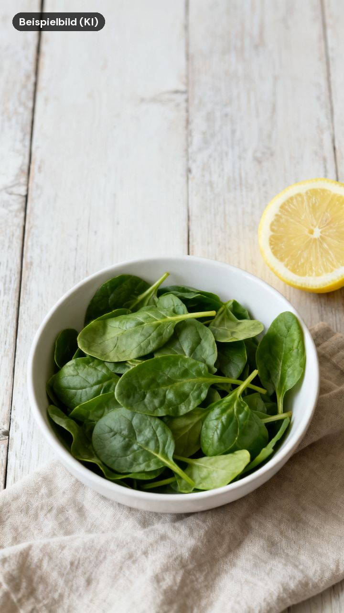
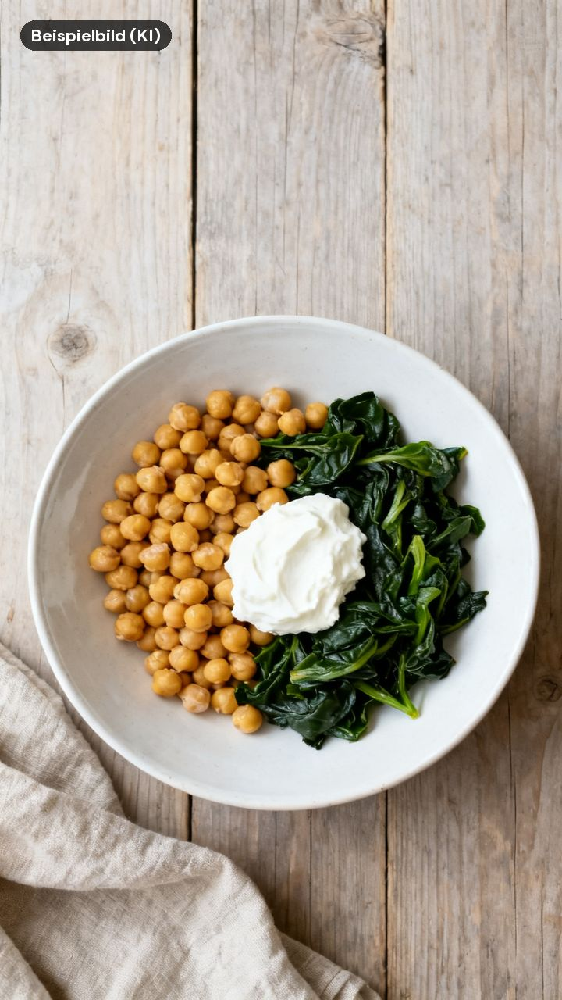

Keine Ernährungs- oder medizinische Beratung. Allergene und Unverträglichkeiten beachten.
Zutaten für 2 Portionen
1 DoseKichererbsen (240 g abgetropft)
300 gBlattspinat
3Knoblauchzehen
1 ELOlivenöl
1 TLKreuzkümmel
1 TLPaprikapulver
4 ELJoghurt
nach GeschmackSalz und Zitronensaft
Allergene: Milch.
Zubereitung
Schritt 1: Knoblauch anbraten
Schneide den Knoblauch in dünne Scheiben und brate ihn in Olivenöl eine Minute goldgelb.

KI-generiertes Beispielbild: so kann Schritt 1 aussehen, kein Foto eines eigenen Ergebnisses
Schritt 2: Kichererbsen rösten
Gib die abgetropften Kichererbsen mit Kreuzkümmel und Paprikapulver dazu und röste sie 6 Minuten.

KI-generiertes Beispielbild: so kann Schritt 2 aussehen, kein Foto eines eigenen Ergebnisses
Schritt 3: Spinat zugeben
Rühre den Spinat portionsweise unter, bis er zusammenfällt. Würze mit Salz und Zitronensaft.

KI-generiertes Beispielbild: so kann Schritt 3 aussehen, kein Foto eines eigenen Ergebnisses
Schritt 4: Anrichten
Verteile die Pfanne auf Teller und setze einen Klecks Joghurt obenauf.

KI-generiertes Beispielbild: so kann Schritt 4 aussehen, kein Foto eines eigenen Ergebnisses
Tipp und Variante
Tipp: Wasche den Spinat gut und schleudere ihn trocken, dann spritzt es weniger in der Pfanne.
Variante: Mit Fladenbrot oder Reis daneben wird daraus ein größeres Essen.
Hinweise
Allergene: Milch.
Prüfe bei Allergien und Unverträglichkeiten immer die Zutatenlisten der Packungen.
Alle Bilder auf dieser Seite sind KI-generierte Beispielbilder und im Bild als „Beispielbild (KI)“ gekennzeichnet. Wie sie entstehen, steht im KI-Hinweis.
Keine Ernährungs- oder medizinische Beratung. Allergene und Unverträglichkeiten beachten.